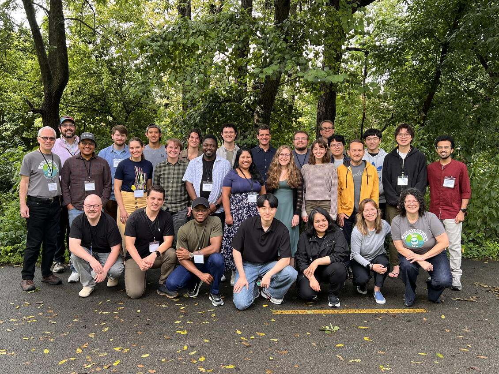

From August 17-20, 2026, researchers across biology, ecology, artificial intelligence, machine learning, data science, and software development gathered in Columbus, Ohio, for FloraPalooza 2026, a collaborative Imageomics Institute workshop focused on plant imagery.
The workshop centered on a practical question: how can the expanding world of plant images help researchers answer biological and ecological questions at scale? Participants worked in small, self-organized teams to explore data from herbarium specimens, RGB photographs, hyperspectral imagery, remote sensing, and other sources.
Rather than operating as a traditional conference or competition, FloraPalooza emphasized hands-on collaboration. Teams developed ideas, code, workflows, datasets, tutorials, tools, and new research connections designed to extend beyond the four-day event.
ViTrees
The ViTrees subgroup explored whether images of tree crowns could help reveal land-use history. Using National Ecological Observatory Network tree crown data and DINOv3-SAT493, the team tested ways to classify land-use history at Harvard Forest, with a workflow intended to support future extension to other data sources and landscapes.
Explore the ViTrees SAtrEes repository
HypeRGB Specimen Classification
The HypeRGB team investigated how combining visible RGB imagery with hyperspectral measurements could improve automated plant species identification. Their work compared single-modal and multimodal classification approaches across taxonomic groups and developmental stages.
Explore the HypeRGB repository
Plot Diversity
The Plot Diversity subgroup studied whether computer vision could help estimate biodiversity from ecological plot photographs. The team explored a moving-window approach with BioCLIP to identify species richness in NEON plot imagery, pointing toward ways image-based tools could support large-scale biodiversity monitoring.
Explore the PlotDiversiVision repository
Leaf Damage Detection
Two teams approached leaf damage from different scientific angles. One focused on detecting visible herbicide damage in weeds and crops, a task that could help make agricultural monitoring more consistent and scalable. Another examined whether damage to milkweed leaves could provide evidence of Monarch butterfly caterpillar feeding.
Explore the AgDamage repository
Explore the got-milk-monarchs repository
Why It Matters
Plant images can hold information about species identity, morphology, biodiversity, phenology, ecological interactions, and environmental history. As biological image collections continue to grow, AI offers a way to help researchers extract that information at a scale that manual analysis cannot match.
FloraPalooza 2026 showed how biological expertise, ecological data, and artificial intelligence can come together to create open resources and launch new collaborations. The workshop highlighted the Imageomics Institute's broader goal of connecting machine learning advances with biological knowledge to accelerate discovery.
The Imageomics Institute thanks Elizabeth Campolongo, Jeannine Cavender-Bares, Jianyang Gu, Hilmar Lapp, Dylan MacArthur-Waltz, William Weaver, Diane Boghrat, and Brittany Fonner for their contributions to FloraPalooza 2026 and for helping bring together expertise across plant science, ecology, data science, and AI.